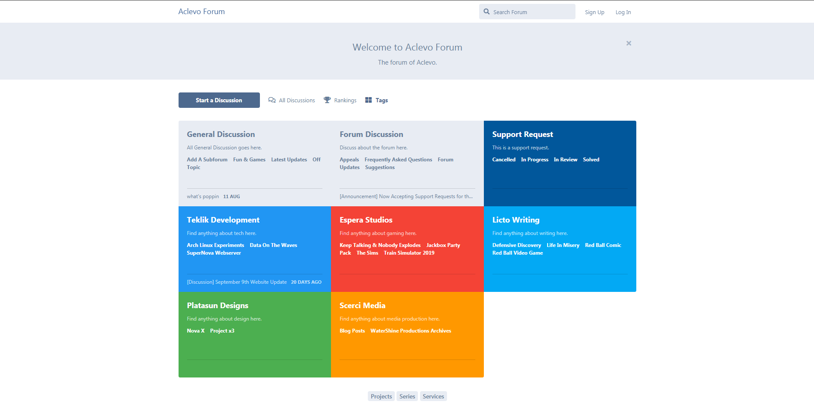
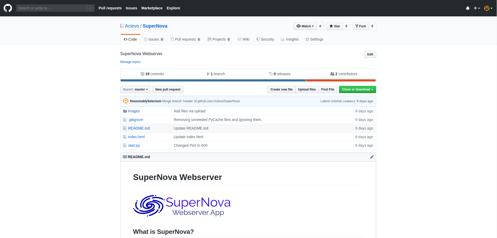

Welcome back to another update at Aclevo! During the past three months, we have made several improvements since our last update blog post. With the introduction of quartly updates, the results of our annual election, yet another update to the Aclevo Website, and other exciting news, we can't wait to share what's new with this one. As always, please feel free to leave your feedback in the comments section below. With further ado, let's look into the recent changes we've made:
New Website
 A current snapshot of our website as of August 3rd, 2019.
A current snapshot of our website as of August 3rd, 2019.
After reaching out for a few public opinions, and an internal vote, we have finally decided to redesign our entire website by updating one of our old themes, and return to using OctoberCMS as our primary content management system. We have made these decisions for a few important reasons:
- Frinkel, the previous site owner of Aclevo, was no longer interested in hosting the website due to personal reasons that we will not disclose. In his place, Troplo will be hosting the website from now on until further notice.
- We wanted to make sure our projects, our series, and our services are accessible to everyone. You can now find information about a specific service right at your fingertips, without having to take the time to research it yourself on our various social medias. We hope this saves you adequate time and resources. All projects, series, and services can be found in the navigation bar on our website. Mobile users may need to open the menu first via the hamburger button.
- We have added a new, very decent content form that serves the needs of all users. Whether your inquiry is about your account on one of our new websites (more information soon), a post that you want taken down from the internet, a request to join our community or partner with us, or anything else; we've made sure that anyone can contact us easily. You can find the new contact form here.
- You can now also tell us about where you found us, whether it be a video, a website, social media, a friend, or another way. For those concerned about privacy, we've also added an option to allow you to not say where you are from.
New Wiki & Forum
A current snapshot of our forum as of September 29th, 2019.
On top of the new website, we also decided to unveil a new wiki and a new forum. We do not have much information about the wiki at this time, as it is not ready for production yet. There is still a lot of work to be done, and we will talk more about our progress in later updates. However, once finished, it will serve as a museum for Aclevo, allowing fans to travel through time and view artifacts never seen anywhere else. Please stay tuned for more information later on in the future.
Our forums, however, are certainly ready for production-use. Based on the Flarum Forum Software, the Aclevo Forum offers a great alternative to the contact form to contact us, and it allows you to talk with other Aclevo fans. Our forum is currently seperated into five categories: General Discussion, Project Discussion, Series Discussion, and Support Requests. We hope to expand this, and add more features as the use of these services grow with increased usability.
New Projects & Series
A current snapshot of the SuperNova GitHub Project as of August 3rd, 2019.
After some careful consideration, we at Aclevo have thought up some new ideas for some new projects and series, which we will be working on in the near future. Here is a list of some of our ideas. Some of these ideas may or may not be under production:
- SuperNova Webserver
- A simple and efficient web server made in Python. Originally started by a member who was studying Python Programming. Ended up being a simple wrapper for an existent Python web-server implementation. We may add more functionality to this project later.
- Untitled Red Ball Fan Comic
- A fan comic of the original Red Ball character and related characters created by WinHearty. We are unsure how to implement this, and how fans from both communities will react to such a project. It is currently only an idea.
- Untitled Red Ball Video Game
- A related or unrelated video game of the idea above, of the original Red Ball character and related characters created by WinHearty. We are unsure about how to implement this project too. It is also currently only an idea.
- Untitled r/techfails Compilation Videos Series
- A series showcasing the best images from r/techfails with commentary. Multiple commentators would co-host each video. We are looking to expand this idea further as we concept it.
- Let's Play Train Simulator 2019
- Gameplay of the train simulator game "Train Simulator 2019" by DoveTail Games with commentary by either Reasonably Selenium or someone else. Either one commentator or multiple commentators would co-host each video. This series may be livestreamed.
- Let's Play The Sims
- Gameplay of the life simulator games "The Sims 3" and "The Sims 4" by Maxis and Electronic Arts with commentary by Reasonably Selenium. Like the previous series idea, it may co-hosted as well. This series may also be livestreamed.
- Let's Play Cities: Skylines
- Gameplay of the city simulator game "Cities: Skylines" developed by Colossal Order and published by Paradox Interactive with commentary by Reasonably Selenium. We are unsure if there will be multiple commentators in this series. It may be livestreamed as well.
Return of Aclevo Live
We are pleased to announce the return of Aclevo Live on the YouTube, Twitch, Steam, Mixer, Smashcast, and DLive platforms! We plan to livestream some games in the near future, including Rocket League, Jackbox Party Pack, Train Simulator 2019, Cities: Skylines, and other fun game titles. If these streams are successful, we may consider adding more elements to livestreaming later, which will be disclosed at a later time.
The quality of such content will remain undetermined at this time, while Aclevo promises to provide the funnest and entertaining content, it is therefore uncensored. Younger viewers are suggested to take advisory while watching, and those with buffering issues are expected to lower their video quality to ensure they can watch without interruptions.
Full-fledged livestreams will no longer be archived on YouTube due to low viewership and watch time, which could hurt our ranking on the platform. Snippets of such livestreams may be uploaded to the channel sometime after the show instead, which will feature the funnest moments while cutting out the boring content. More information about full livestreams archives will be available in a later update.
Latest Election Results
To save the best for last, your Latest Election Results are here for your enjoyment. For those who do not know, Aclevo runs elections for it's President, Vice President, and it's Board Members every quarter (around four months). This allows Aclevo to maintain a clean and fresh scent for everyone. While the Owners do maintain their positions, every other role that has control of this community is swapped around. Here are the results of the latest election, which ended in July:
With a majority vote of seven (7) votes, WinHearty overtakes FairPlay137's position as President of Aclevo. This marks the end of FairPlay137's role as President of Aclevo after eight months. We thank him for serving under Aclevo, and we congratulate WinHearty for being the first female President of Aclevo.
With a second majority vote of three (3) votes, Logan S. retains his position as Vice President of Aclevo. However, this time he is reigning alone without a Second Vice President. We congratulate him for getting re-elected and the achievement of independent Vice Presidency.
To end off the election, two newcomers join the Board Team as two previous Board Members take back the role. The newcomers are DJ Lisi, being one of the first women on the Board Team to serve Aclevo, and Troplo, who is currently hosting the Aclevo Website at this time. Meanwhile, Nova and Scythal have returned to their positions as they greatly serve again for the Executive Team as they take Lemon, Frinkeldoodle, Monorail, and Quarky's positions. We thank you all for participating in the election, and we hope you enjoy your new roles!
Conclusion
The past quarter of Aclevo has been fun and discovering, and who knows what the future holds. With many internal and external changes, we've been working hard on making our community great and successful for everyone. While summer is nearing it's end, a new door opens for us as we adventure into the school months of autumn (if you live in the Northern Hemisphere). With the new wiki about to be released soon to the public, to the inspiration of more new ideas that we can't wait to share, we believe the future will be fun. You can help us make more fun by leaving a comment down in the comments below providing us feedback as to how we are doing, and even giving us new ideas that we can turn into a few new series. Other than that, it's time to sign off. We thank you for reading this August Aclevo Update, and we hope to see you in the next blog post, and stay tuned for the next quarterly Aclevo Update in September, hopefully without delays next time.
Peace out!
(Please note we wanted to publish this blog post as soon as possible, and there may be some errors we have not been able to work on yet. We apologize for the inconvenience, and we will work on them when we are able to. Thank you for understanding.)